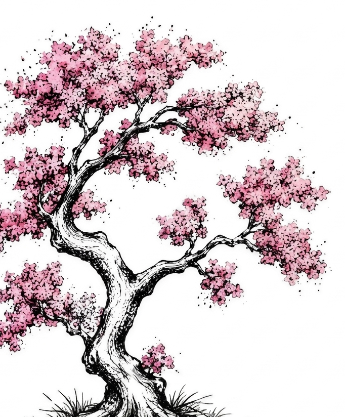

Humming Cob
Élevage Irish Cob · Gard · France
L'élégance et la douceur d'une race, élevée avec passion dans les terres du Midi.
Découvrir

Élevage Irish Cob · Gard · France
L'élégance et la douceur d'une race, élevée avec passion dans les terres du Midi.
Humming Cob est né d'une passion pour l'Irish Cob, une race qui nous séduit par sa douceur, sa polyvalence et sa proximité avec l'homme.
Après plus de trente-cinq années passées auprès des chevaux, Alice concrétise un rêve : créer un élevage familial où chaque naissance est réfléchie et chaque cheval considéré comme un individu à part entière. À ses côtés, Bastien apporte son regard extérieur, sa rigueur et son sens du soin. Ensemble, nous élevons nos chevaux dans le Gard avec une conviction simple : élever des chevaux équilibrés, bien dans leur tête et dans leurs sabots, puis accompagner leurs futures familles avec la même attention.
Fondé sur des valeurs d'authenticité, notre élevage place le bien-être de ses chevaux au premier plan. Chaque naissance est un projet mûrement réfléchi et nos juments ne sont pas systématiquement mises à la reproduction.
Une même race, 2 studbooks. Chaque cheval a été soigneusement séléctionné et inscrit au studbook France Irish Cob. Une attention particulière ayant été porté sur des critères de niveau « Élite » : une morphologie harmonieuse et un bon tempérament.
Nos chevaux évoluent de façon à respecter au mieux les 3F (FORAGE FRIENDS FREEDOM) ou les 6 besoins : RESPIRER - BOIRE - DORMIR - MANGER - BOUGER - COMMUNIQUER. Une vie en troupeau est indispensable pour forger des caractères sains, sociables et bien dans leur peau.
Nos reproducteurs sont issus des meilleures lignées irlandaises et anglaises. Chaque individu constituant notre cheptel a été rencontré dans son pays d'origine (Oxford en Angleterre pour les SD - St Clears au Pays de Galles pour Avantgarde), avant d'être importé.
Dès la naissance et tout au long de sa croissance, chaque poulain est manipulé à son rythme. Licol, marche en main, parage, vermifuges — tous nos jeunes chevaux partent avec les bases essentielles.
Dossier complet fourni à l'achat : contrat de vente, carnet IFCE, suivi vétérinaire et album photo. Nous faisons appel à des professionnels spécialisés lorsque cela est nécessaire.
Implantés dans le Gard (30), au cœur de la garrigue cévenole. Visites sur rendez-vous pour rencontrer nos chevaux dans leur environnement naturel.
Un petit cheptel : cinq chevaux, sélectionnés pour leurs qualités morphologiques, leurs origines et surtout leur tempérament.
Né en 2010 en Irlande, arrivé en France à ses 9 mois. Lignée Cairnview reconnue pour sa morphologie taillant grand et ses utilisations polyvalentes. 5 poulains à son actif.
DécouvrirNé au Pays de Galles en 2022, arrivé en France en 2023. Vice-Champion de France 2025 des étalons à 3 ans. Bai double pearl, ses premiers poulains naissent en 2026.
DécouvrirNée en 2010 en Angleterre, arrivée en France en 2018. Fille du mondialement connu SD Woolly Mammoth. Enregistrée au TGCA, elle entre au SB.IC en 2021. Débourrée montée.
DécouvrirNée en 2017 au Pays de Galles, fille de SD Flash Harry, arrive en France en 2018. Elle entre au SB et obtient la mention Elite en 2021. Débourrée montée.
DécouvrirNée en 2018 au Pays de Galles, pleine sœur de Sakura, elle arrive en France avec sa mère au mois de septembre de la même année. Elle entre au SB et obtient la mention Elite, à seulement 3 ans.
DécouvrirTous nos poulains sont manipulés, licolés, vermifugés et parés dès le plus jeune âge, élevés au contact quotidien de l'humain.
Espiègle, pétillant, malin — un vrai crâneur proche de l'homme. Une bonne prise en main sera nécessaire pour en faire un partenaire de choix. Idéal spectacle, TAP, TREC, rando. Taille est. ~1m45. 4 000 €
Voir la ficheIntelligent, réfléchi, polyvalent. De robe Grullo Silver, rare dans la race. Taille est. ~1m50 (toisé à 1m46 déjà). Super caractère avec l'humain. Il pourra aisément évoluer en TREC, en randonnée ou devenir étalon. 4 500 €
Voir la ficheFin, élégant, sensible — grand amoureux de l'humain. Robe Grullo Silver. Taille est. ~1m45/1m50 (toisé à 1m42). Plus léger et atlhétique, parfait pour du dressage, du poney game... 3 500 €
Voir la ficheNé le 13 mai 2026. Fils d'Avantgarde (double pearl) × SD Suzie. Oeil partiellement bleu, noir porteur pearl. Il fait déjà preuve d'une sacrée force de vivre. À suivre.
Voir la ficheCes poulains ont rejoint leur nouvelle famille.
Née le 4 avril 2019. Noir sabino, du bleu dans les yeux. Première pouliche, née en France du mariage inégalable de Suzie et Flash Harry, à porter notre affixe (HC). J'ai la chance de la voir grandir non loin de chez nous.
Cliquer pour voir les photosExplorez les liens entre nos reproducteurs et leur descendance — origines, filiations, lignées de référence et poulains issus de l'élevage.
Certains chevaux ne sont plus là, mais ils continuent d'accompagner chaque pas de cette aventure. Leur empreinte vit dans chaque matin passé au pré, dans chaque combat mené et dans tout ce que Humming Cob est aujourd'hui.

2017 — 2020
Pouliche · Gypsy Cob · SD Flash Harry × SD Lizzy
Née en Angleterre, cette pouliche et son regard bleu furent une douce évidence. Rien ne la destinait à rejoindre l'aventure. Arrivée avec Sakura dont elle était l'ombre, ma Princesse Petit Pois était d'une sensibilité rare. D'abord réservée, elle comprit vite l'intérêt des humains et venait me réclamer sa séance de gratouilles.

2004 — 2023
Hongre · Espagnol · Gris
En 2010, après cinq ans sans cheval, Djb, véritable coup de cœur, fut mon compagnon de vie pendant douze ans. Grand ami d'Archy et tonton des pouliches, il marque ceux qui croisent sa route. Guerrier, maître d'école et révélateur, il bouleverse mes certitudes, laisse son empreinte et transforme à jamais ma vision du cheval.
Une question sur nos poulains ou reproducteurs ? Une visite à l'élevage ? Nous vous répondrons dans les meilleurs délais.